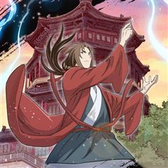
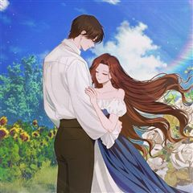
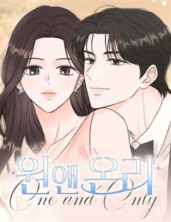
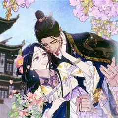

눈물 버튼 웹툰 추천 TOP 30
눈물샘자극, 투병 같은 태그가 붙은 작품을 모았어요. 네이버웹툰·카카오웹툰·레진코믹스에서 조건에 맞는 작품 78개 중 인기 순으로 30개를 골랐어요. 인기 TOP 3: SSS급 죽어야 사는 헌터, 무지개다리 파수꾼, 남편을 내 편으로 만드는 방법
2026-09-29 기준 · 성인 작품 제외
내 취향으로 더 좁혀서 추천받기 →-
1
 카카오웹툰
카카오웹툰SSS급 죽어야 사는 헌터
F급 말단 헌터 ‘김공자‘. 랭킹 1위 ‘염제‘를 부러워하던 어느 날, 무려 S+급 스킬을 얻는다. 하지만 기쁨도 잠시, 어째 스킬 내용이 이상하다?! 상대의 스킬 중 1개를 복사한다,까지는 좋은데… "뭐? 내가 죽어야만 발동된다고?!" 죽어야 사는 헌터의 인간찬가 <SSS급 죽어야…
눈물샘자극학원물회귀카카오웹툰에서 보기 → -
2
 카카오웹툰
카카오웹툰무지개다리 파수꾼
돈과 성공만을 전부로 알던 유명 수의사 이한철. 그는 어느 날 사고 이후, 동물들의 목소리를 들을 수 있게 된다. 그렇게 동물 병원을 찾은 여러 동물들의 이야기를 듣던 어느 날, 길에서 만난 강아지 밍구의 살려달라는 목소리를 듣게 되는데.. 동물의 목소리를 듣는 수의사 이한철, 동물을…
눈물샘자극사이다카카오웹툰에서 보기 → -
3
 카카오웹툰
카카오웹툰남편을 내 편으로 만드는 방법
판타지 소설 속 남편의 손에 죽는 악역 조연, ‘루드베키아’가 되었다. 이 세계의 망할 아버지는 내 정략결혼 상대를 또 물어왔다. 문제는 그 상대가 바로 날 죽이게 될 남편이라는 것! 일단은 살길을 찾아야 한다. 북부 사람들에게 최대한 무해하게 보이면서 원작에서 내가 죽일 남편의 여동…
눈물샘자극설렘폭발로판빙의카카오웹툰에서 보기 → -
4
 카카오웹툰
카카오웹툰쌍갑포차
예상치 못한 시간, 예상치 못한 장소에 나타나는 쌍갑포차! 쌍갑포차를 운영하는 월주는 과연 누구일까? 쌍갑포차에 찾아오는 다양한 손님들의 감동적인 이야기! 한국 전통 신화 이승과 저승을, 꿈의 세계 그승과 함께 재창조한 세계관으로, 덤덤하게 써 내려진 깊이 있는 사람들의 사연 속 조선…
눈물샘자극공감옴니버스카카오웹툰에서 보기 → -
5
 카카오웹툰
카카오웹툰다시 한번, 빛 속으로
성녀로 추앙 받는 동생을 죽이려고 했다는 누명을 썼다. 나를 믿어주는 사람 하나 없었고, 감싸주는 사람 하나 없었다. 심지어 피를 나눈 가족마저도. 14살의 겨울. 이덴베르의 4황녀였던 나는 사람들 앞에서 비참하게 목이 잘렸다. 생을 마감하고, 새로 눈을 뜬 나에게 다가온 것은… “아…
눈물샘자극로판힐링카카오웹툰에서 보기 → -
6
 네이버웹툰
네이버웹툰1초
구조율 100%의 전설적인 소방관. 그의 특별한 능력은 긴장하는 순간, 미래가 보인다는 것! 촌각을 다투는 진짜 소방관들의 이야기
눈물샘자극현대이능력청춘직업드라마네이버웹툰에서 보기 → -
7

-
8
 카카오웹툰
카카오웹툰이 결혼은 어차피 망하게 되어 있다
여섯 살, 카셀의 삶은 이네스에게 선택받은 이후 송두리째 바뀌었다. '평생'이 얼마 만큼인지도 모르는 어린아이에게 '평생'을 약속하게 한 맹랑한 동갑내기 여자아이. 카셀은 곧 빼앗길 자유를 최대한 누리겠다는 듯 해군에 입대해 방탕한 생활을 일삼는다. 이네스는 이 모든 것이 만족스러웠다…
눈물샘자극로판회귀카카오웹툰에서 보기 → -
9
 카카오웹툰
카카오웹툰가짜를 위한 장소는 없다
어미와 공모하여 황녀를 사칭하고, 마탑과 제국을 이간질하여 전쟁을 일으킨 '가짜 황녀', 필로멜. 그녀는 모든 죄가 들통나자 사형 당한다. 실로 악당에 어울리는...... "내가, 아니 책 속의 필로멜이 잘못을 했기로서니 죽일 만큼은 아니잖아!" 필로멜은 괴성을 지르며 읽던 책을 던졌…
눈물샘자극로판육아물카카오웹툰에서 보기 → -
10
 카카오웹툰
카카오웹툰시한부를 즐겼을 뿐이었는데
시한부였던 나, 빙의도 시한부 캐릭터에 해버렸다? 비록 이번에도 시한부지만 오늘내일하던 내게 21년의 삶이 생겼다. 이렇게 움직였는데 폐도, 심장도 아프지 않아. 숨이 차지만, 이것조차 너무 즐거워! 건강하게만 자라달라는 엄마와 처음 느껴보는 가족들의 사랑. 이번 생은 내게 선물이다.
눈물샘자극로판육아물카카오웹툰에서 보기 → -
11
 카카오웹툰
카카오웹툰사랑받는 언니가 사라진 세계
"난 널 죽여 버리고 싶을 만큼 싫어하거든, 시에나." 한 평생 언니의 그림자였고, 그 언니에게 배신당해 죽었다. 그런데… 시간을 거슬러 온 그 날부터 사람들이 달라졌다. "지저의 나흐트가 선택한 아이는 너뿐이다." "대공 전하께서는 당신을 가족이나 다름없는 존재로 인정하고 계십니다.…
눈물샘자극로판타임슬립카카오웹툰에서 보기 → -
12

카카오웹툰화타가 된 외과의사
정의로운 성격 때문에 전문의는커녕 목숨까지 잃은 일반외과 전공 3년차 한진수. 천사인가, 악마인가, 아님 알 수 없는 시스템인가. 평소 쌓은 선행 덕분에 부활의 기회를 얻게 된다. 산적 떼에게 죽은 몸으로 부활하게 된 한진수. 그런데 이 몸이 전설의 명의名醫 화타?! 전란이 끊임없는…
눈물샘자극액션환생카카오웹툰에서 보기 → -
13
 카카오웹툰
카카오웹툰0살부터 슈퍼스타
엘프, 요정, 슬라임, 선물상자, 마왕 등 수천 번의 환생에 이어 몇 번째인지도 모를 새로운 삶. 인간 아기로 태어난 나 이서준! 내가 살아온 기억들이 동화처럼 남아 있는 생의 도서관 속에서 가장 간절히 원했던 꿈이 있는 전생을 보게 된다. 거기다 사람들의 눈을 사로잡는 이능력들까지!…
눈물샘자극힐링성장물카카오웹툰에서 보기 → -
14
 카카오웹툰
카카오웹툰면면면
1960년대 초 대한민국, 식문화의 일대 변혁이 일어난다. 전쟁 이후 굶주림이 일상이 된 국민들은 미군 부대의 잔반을 골라내어 끓인 꿀꿀이죽 한 그릇으로 하루 끼니를 때우던 상황. ‘전중윤’은 가난에 허덕이는 국민들의 삶, 그들의 제대로 된 한 끼 식사를 위해 전전긍긍하고 있었다. 카…
눈물샘자극성장물카카오웹툰에서 보기 → -
15
 카카오웹툰
카카오웹툰닥터 최태수
대학병원의 가장 말단 의사, 걸어다니는 깡통― 인턴. 하루하루, 인턴으로서의 고된 나날을 보내던 최태수는 우연히 세계최정상의 흉부외과의사인 '리처드 카프레네'의 임종을 지키게 된다. 이때, 놀랍게도 카프레네의 모든 의학지식이 고스란히 최태수에게 전이되는데…!! 따뜻한 심장을 지닌 천재…
눈물샘자극공감힐링카카오웹툰에서 보기 → -
16
 카카오웹툰
카카오웹툰검을 든 꽃
피로 물든 제국. 그날 나는 마검에 잠식된 채 가장 사랑하던 사람들을 내 손으로 베었다. 마검에 물든 지 15년째, 인간이 만든 열 개의 검 기오사를 모두 소유한 나는 신검에게 소원을 빌었다. "아무도 죽이지 않았던 과거로 나를 돌려보내줘." 시간은 모든 비극이 시작되기 전으로 돌아가…
눈물샘자극로판회귀카카오웹툰에서 보기 → -
17
 카카오웹툰
카카오웹툰타람 타람 타람
나긋나긋한 움직임으로 들어온 다온이 연회장 중앙에서 멈춰 섰다. 인형만큼이나 무미하고 감정 없는 얼굴이었다. 그럼에도 도도하고 우아해서 얼음 여왕처럼 강렬한 인상을 주었다. 엑서는 다리를 꼬며 낮게 웃었다. “지배자로서, 오늘 밤 널 안겠다.” 운명적인 첫 만남. 한눈에 반해버린 여자…
눈물샘자극설렘폭발로판시대물카카오웹툰에서 보기 → -
18
 카카오웹툰
카카오웹툰시한부 엑스트라의 시간
가문의 후계자도, 귀여움을 독차지하는 막내도 되지 못한 어중간한 둘째로, 평생 다른 사람들에게 가려진 삶을 살아온 카리나. 그림을 그리는 것만이 유일한 취미인 그녀는 자신에게 남은 시간이 고작 1년 뿐이라는 사실을 알게 된다. 그래서 교류도 없던 약혼자를 무작정 찾아갔다. 그가 원하던…
눈물샘자극로판힐링카카오웹툰에서 보기 → -
19
 카카오웹툰
카카오웹툰총애를 거절하는데 왜 집착하나요
"넌 내 아이가 아니야. 슈엘리나는 정령 거울형에 처한다.” 진짜 황녀 슈엘리나는 황비의 계략으로 고아원에 버러져 평생을 외로이 살아간다. 마침내 친부인 황제를 만났지만 끝내 비참한 최후를 맞이하게 되고... ‘슈엘리나. 난 너처럼 살지 않겠어.’ 이 상황에서 벗어나기 위해 바일롯 대…
눈물샘자극힐링로판육아물카카오웹툰에서 보기 → -
20
 카카오웹툰
카카오웹툰잊혀진 들판
- 난 매일 기도해 이 사랑이 죽기를 오늘까지만 너를 사랑하고 내일은 이 사랑이 죽어 있기를 - 불륜으로 태어난 비운의 황녀, 탈리아 로엠 귀르타. 그녀는 무관심한 부모와 적대적인 이복형제들, 그리고 자신을 경멸하는 하인들 틈에서 일그러진 채 자란다. 다가오는 모든 이들에게 가시를 곤…
눈물샘자극자극적인로판카카오웹툰에서 보기 → -
21
 네이버웹툰
네이버웹툰공작님의 아이만 필요합니다
‘과거로 돌아갈 수 있다면, 그 사람을 사랑하지 않을 텐데.’ 회귀 후, 전남편과의 두 번째 결혼은 오직 아이를 위해서였다. 그렇게 기적처럼 얻은 두 번째 생은 사랑을 갈구하던 전생과 달리 오로지 아이를 다시 만나겠다는 일념하에 그와의 결혼을 선택했다. “딱 일 년만 나와의 결혼을 유…
눈물샘자극후회물고자극로맨스선결혼후연애로판네이버웹툰에서 보기 → -
22
 카카오웹툰
카카오웹툰에보니
아버지와 약혼자를 살해한 패륜 종속 살인마, 에보니 보냐크. 사형선고를 받고 죽을 날만 기다리고 있던 그녀는 어느날 자신에게 후견인이 생겼다는 소식을 듣고 석방되어 대공의 성으로 보내지게 되는데... "자, 어서 발을 넣어요. 너무 뜨거우면 말하고." 지하에 감금당하거나 쥐도 새도 모…
눈물샘자극로판성장물카카오웹툰에서 보기 → -
23
 카카오웹툰
카카오웹툰어떤 계모님의 메르헨
철혈의 미망인, 거미 과부, 남자 사냥꾼, 노이반슈타인 성의 마녀, 귀부인들의 수치……. 모두 슈리 폰 노이반슈타인 후작 부인을 가리키는 말이다. 세상에 욕 먹어 가며 동생뻘인 피 한 방울 섞이지 않은 자식들을 키워냈다. 그리고 마침내 첫째 제레미의 결혼식 날, 모든 고생과 노력이 결…
눈물샘자극로판회귀카카오웹툰에서 보기 → -
24
 카카오웹툰
카카오웹툰내가 죽은 뒤 꼬마 신랑은
8살이나 어린 꼬마 신랑과 정략결혼을 하게 된 리베냐. 불의의 사고로 죽었다. 눈을 떴더니 새로운 몸으로 빙의했다? 지긋지긋한 과거의 삶은 지우고, 새로운 삶으로 시작하려고 했는데... 우연히 만난 전남편의 상태가 이상하다? "단 한순간도... 널 잊은 적 없어." 10년이나 지났는데…
눈물샘자극설렘폭발로판빙의카카오웹툰에서 보기 → -
25
 카카오웹툰
카카오웹툰처음이라 몰랐던 것들
위대한 시계 장인들의 딸이며 영웅, 빅토르 함장의 아내인 스칼렛 덤펠트. 그녀는 경찰청에서 취조를 받던 중, 빅토르의 왕실 복귀를 반대하는 자들에 의해 기억을 잃게 된다. "나가실 때쯤에는, 여기서 있었던 일을 기억하지 못하실 겁니다.” 사라진 일주일 간의 기억. 그리고 신문에 대서특…
눈물샘자극로판시대물카카오웹툰에서 보기 → -
26

카카오웹툰집착은 다정하고 집요하게
황량한 레그벨에서 외롭게 지내던 백작 영애, 시오아나. 에티엔을 처음 만났을 때 그는 그녀의 다정한 노예였다. 첫사랑, 첫 입맞춤,모든 처음의 순간을 함께하며 시오아나와 에티엔은 둘만의 비밀 결혼식을 올린다. 불행이 레그벨을 덮쳐오고, 두 사람은 지독한 오해를 품고 헤어지게 된다. 두…
눈물샘자극설렘폭발로판카카오웹툰에서 보기 → -
27
 카카오웹툰
카카오웹툰은해상단 막내아들
『은해상단 막내아들』 천하제일의 상재(商才)를 타고난 은서호. “어째서 무림맹이 나를…….” “맹의 윗분들께서 자네가 거슬린다고 하더군. 쯧, 그놈의 돈이 뭐라고.” 백도 무림을 자처하던 무림맹의 칼에 살해당한 나는 상단 일을 처음 배우던 날로 돌아왔고, 굳게 다짐한다. 이번 생에서는…
눈물샘자극사이다액션회귀카카오웹툰에서 보기 → -
28

네이버웹툰원 앤 온리
연주는 사랑했던 은성의 성공을 위해 그를 떠난 뒤, 자신이 임신한 사실을 알게 된다. 10년 후, 한별의 엄마가 된 연주는 스타일리스트로 일하며, 자신이 참여할 영화의 주연이 은성임을 알게 되는데. 한편, 은성은 가장 행복했던 시절, 아무런 설명 없이 떠난 연주를 10년 만에 재회하자…
눈물샘자극감성적인설렘폭발오피스결혼생활네이버웹툰에서 보기 → -
29

카카오웹툰국혼
난세(亂世)의 위태로운 연인들, 그들 앞에 기다리는 거대한 운명의 수레바퀴 내 어린 비(妃)여 맹세는 돌에 새기는 것이 아니라 마음에 새기는 것이라 했지. “천지신명에게 약속해. 은리와 결이 오라버니가 혼인하였다고. 여기다 오라버니랑 은리 이름을 새겨.” 말 잘 듣는 꼬마신랑 세결은…
눈물샘자극카카오웹툰에서 보기 → -
30
 카카오웹툰
카카오웹툰기적의 물리치료사
물리치료사 이기적. 센터는 망하고, 여자친구에게는 차이고...! 되는 것 하나 없는 날, 떨어지는 별을 맞고 나서 상태창이 보이기 시작했다?! 최고의 물리치료사로 성장하는 이기적의 이야기!
눈물샘자극힐링카카오웹툰에서 보기 →